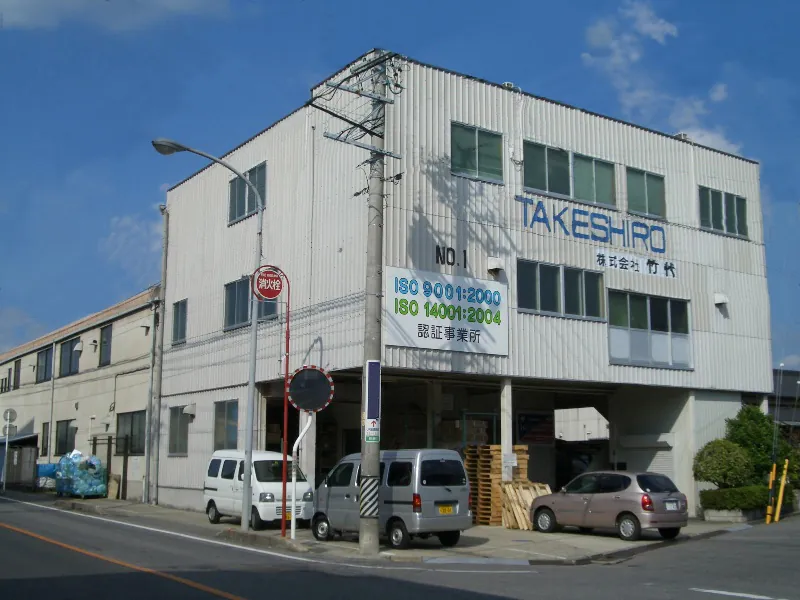
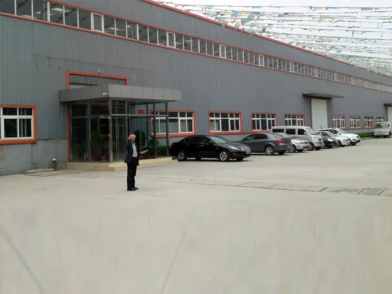
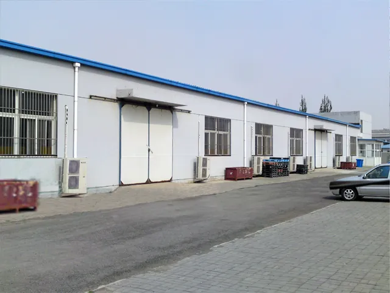
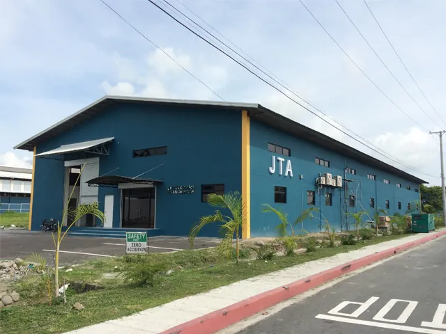
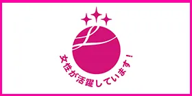

経営理念
竹代は、「八方良し」のバランスを取り
幸せの源泉を提供し続ける企業を目指す。
私たちが考える「八方」
事業内容
『人の手じゃなきゃできない』ものづくりを。
大手メーカーの工作機械用制御盤、ワイヤーハーネスや各種電機機器などの製造を手がけています。
- 01
ワイヤーハーネス・ケーブル加工
- 02
制御盤組立
- 03
計量機器組立
- 04
電子機器組立・基盤半田加工
- 05
光ファイバーケーブル加工
- 06
大型機用異電圧トランス／中容量乾式自冷変圧器
強み
選ばれ続けてきた、4つの理由。
- 01
創業50年以上の信用と、蓄積したノウハウによりお客様にご満足をお届けします。
- 02
岡崎、小牧の2つの拠点とグローバルな展開で、お客様のニーズに対応しています。
- 03
ISO9001、ISO14001（針崎工場／小牧工場）の認証を得て、独自の管理手法と生産システムの革新に挑戦しています。
- 04
ULワイヤリングハーネス、ULプロセスドワイヤーの登録を得てグローバルな生産に対応します。
数字で見る竹代
積み重ねてきた実績を、数字で。
-
59年
創業から
1967年の創業以来、岡崎でものづくりを続けています。
-
220名
従業員数
「人の手じゃなきゃできない」仕事を担う仲間がいます。
-
8拠点
国内5工場・海外3拠点
岡崎4工場・小牧1工場に加え、北京・天津・クラーク（比）に展開。
-
約200種類
圧着アプリケータ保有数
多品種の端子加工に、段取り替えで柔軟に対応します。
-
3段階目
えるぼし認定
女性活躍推進法にもとづく認定の最高位を取得しています。
-
2規格
ISO認証
ISO9001（品質）／ISO14001（環境）を針崎・小牧で取得。
設備・認証
品質を支える、設備と認証。
保有設備
- 自動切断圧着（半田）機
- 自動切断機
- 半自動圧着機（アプリケータ 約200種類）
- ショットブラスト機
- 各種電線加工設備
認証・許可・表彰
- ISO 9001（針崎工場／小牧工場）
- ISO 14001（針崎工場／小牧工場）
- UL ワイヤリングハーネス登録
- UL プロセスドワイヤー登録
- えるぼし認定 3段階目最高位
- 一般労働者派遣事業許可／有料職業紹介事業許可
- 岡崎商工会議所 顕彰（創立50周年）
- 地域安全活動 感謝状／シルバー人材センター事業 感謝状／岡崎市 社会福祉事業 感謝状
拠点
岡崎から、中国・フィリピンへ。
国内5工場に加え、中国・北京／天津、フィリピン・クラークに関連工場を展開しています。

北京華竹科技有限公司中国・北京 
天津華竹科技有限公司中国・天津 
JTA Electronics (PHILS) Corporationフィリピン・クラーク
国内拠点
- 針崎工場【本社】
- 針崎工場【第2】
- 美合分工場
- 本社分工場
- 小牧工場
海外拠点
- 北京華竹科技有限公司（中国・北京）
- 天津華竹科技有限公司（中国・天津）
- JTA Electronics (PHILS) Corporation（フィリピン・クラーク）
主要取引先
信頼をいただいているお客様。
- オークマ株式会社
- 愛知時計電機株式会社
- 泉州電業株式会社
- 株式会社コンテック
- アイエルテクノロジー株式会社
採用情報
女性が働き続けられる会社であることを、
国が認めています。
株式会社竹代は、女性活躍推進法にもとづく「えるぼし認定」の3段階目（最高位）を取得しています。
創業59年、従業員220名。人の手でしかできない仕事を、これからも一緒に。

【ここに社員インタビュー・働く姿の写真が入ります】
現在の公開情報には工場内部や働く方の写真がありません。
撮影させていただければ、この位置に配置します。
撮影させていただければ、この位置に配置します。
会社概要
| 会社名 | 株式会社竹代（TAKESHIRO Co.,Ltd.） |
|---|---|
| 所在地 | 愛知県岡崎市針崎1丁目1-16 |
| 代表者 | 酒井 快弥 |
| 創業 | 1967年 |
| 資本金 | 3,000万円 |
| 従業員数 | 220名 |
| 電話番号 | 0564-51-8254（代表）／ FAX 0564-52-7329 0564-51-8749（第2）／ FAX 0564-55-3901 |
| 事業内容 | ワイヤーハーネス・ケーブル加工／制御盤組立／計量機器組立／電子機器組立・基盤半田加工／光ファイバーケーブル加工／大型機用異電圧トランス製造 |